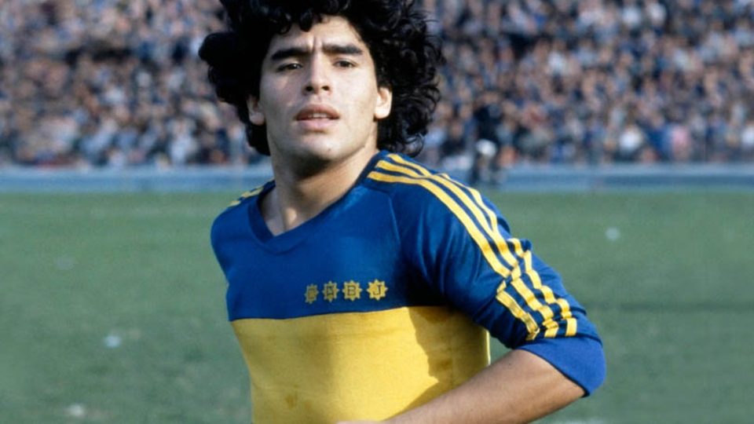

ITALIA

FIORENTINA
Camiseta utilizada por Gabriel Omar Batistuta.

NAPOLI
Casaca usada por Diego durante el Calcio 1988.
INTER
Camiseta del campeón de Europa en 2010.

JUVENTUS
Casaca utilizada por Carlitos Tevez en 2015.
INGLATERRA
CHELSEA
Camiseta del campeón de la Champions 2012.
MAN CITY
Casaca citizen del Kun en 2014.

ARSENAL
Camiseta del Arsenal invicto en 2006.
MAN UNITED
Camiseta del histórico United del 2008.
ARGENTINA

BOCA 1981
Camiseta utilizada por Maradona en su primer paso por Boca.
RIVER 1996
Casaca del histórico River de Ramón Díaz.

RACING 1988
Camiseta del 10 del Racing campeón de la Supercopa.

INDEPENDIENTE 1984
Camiseta histórica del Rojo campeón del mundo.